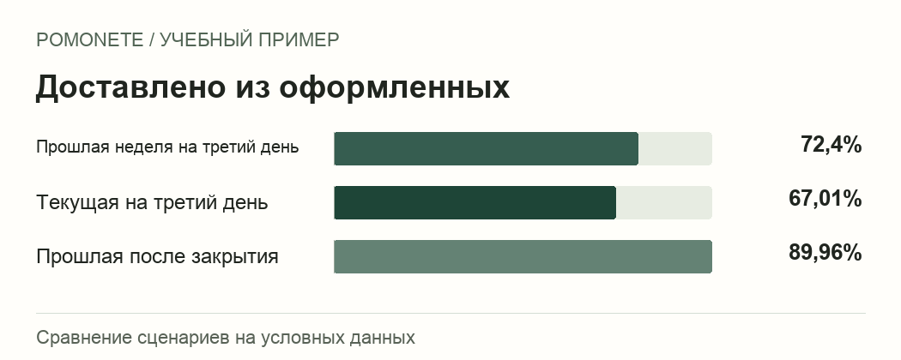

Как считать долю доставленных заказов свежей недели на Яндекс Маркете
Почему последние дни недели и закрытые заказы требуют разных срезов в аналитике магазина.
В воскресном отчёте селлер Яндекс Маркета видит падение доли доставок. Части заказов со свежей недели ещё ехать два дня. Отчёт полезен, если сохранять возраст группы и сравнивать одинаково зрелые заказы. На примере игрушек для настольных игр разберём, какое число годится для обсуждения операционного качества.
Собрать когорту по оформлению
Отберите заказы по дате, когда они были созданы, и добавьте состояние на нужный день. Проставьте дату снимка в каждой строке. Тогда одна и та же группа может иметь несколько записей по разным возрастам, которые не сложатся в общий объём. Для событий доставки и отмены сохраните даты отдельно.
Чтобы пересобрать расчёт «Доставлено из оформленных» для своего магазина, перенесите в него исходные числа. В формуле A обозначает «доставлено к дате снимка», B обозначает «оформлено в группе». Деление отвечает за долю, умножение на 100 переводит её в проценты. При нулевом знаменателе долю оставляют пустой. Запишите рядом период и охват каждого среза. Если для одной строки известна только оценка, оставьте пояснение непосредственно рядом с ней: по итоговой цифре источник уже не восстановить.
Доставлено из оформленных = A ÷ B × 100
| Условие | Доставлено к дате снимка | Оформлено в группе | Доставлено из оформленных |
|---|---|---|---|
| Прошлая неделя на третий день | 202 | 279 | 72,4% |
| Текущая на третий день | 193 | 288 | 67,01% |
| Прошлая после закрытия | 251 | 279 | 89,96% |

В сценарии «Прошлая неделя на третий день» в формулу подставляем доставлено к дате снимка = 202, оформлено в группе = 279. Получается 72,4%. Исторический снимок сделан через три дня после конца периода. Из группы ещё не завершились несколько маршрутов.
В сценарии «Текущая на третий день» в формулу подставляем доставлено к дате снимка = 193, оформлено в группе = 288. Получается 67,01%. Длительность наблюдения совпадает, поэтому динамику можно сверить при прочих сопоставимых условиях.
В сценарии «Прошлая после закрытия» в формулу подставляем доставлено к дате снимка = 251, оформлено в группе = 279. Получается 89,96%. Та же группа прошлого периода созрела. Часть новых доставок появилась после первого среза.
Если «Прошлая неделя на третий день» взять за исходную точку, «Текущая на третий день» меняет показатель «доставлено из оформленных» на -5,39 п. п., а «Прошлая после закрытия» на 17,56 п. п.. Между двумя последними строками разница составляет 22,95 п. п. при вычитании второй из третьей. Смотрите, какой именно вход изменился между строками. Если менялись объём и условия одновременно, итог сравнения относится ко всему сочетанию.
Запишите отдельно результат по обычным условиям «Прошлая неделя на третий день» (72,4%) и результат по уточнённым условиям «Прошлая после закрытия» (89,96%). Если обе оценки получились по одному правилу, следующий вопрос касается исходных данных. Проверьте, сохраняется ли направление сравнения, если вернуть одно нестабильное условие к исходному. Сценарии полезно привязывать к операционному событию, по которому можно проверить, что новый режим действительно произошёл.
Календарная сводка отвечает на другой вопрос
Общее число доставок в понедельник включает заказы нескольких недель, поэтому оно описывает нагрузку и реализацию в этот день. Когортный отчёт показывает судьбу группы созданных заказов. Смешение двух периодов способно давать лишний сигнал, особенно если между неделями менялись праздники и время доставки.
Проверьте переход от первичной записи до показателя «доставлено из оформленных». Колонки «доставлено к дате снимка, оформлено в группе» могут поступить разными путями. Пройдите пример, где дата и сумма видны в исходнике, до последней строки. Для этого подойдут отчёт аналитики и история доступности предложения. Затем возьмите один случай с исключением и убедитесь, что результат можно восстановить по сохранённому правилу.
Рядом с таблицей показов положите календарь доступности, позиций и цен. Выгрузка агрегатов удобна для первого сигнала, но день с выключенным предложением ломает сравнение. Для каждой крупной группы полезно иметь отдельные суммы числителя и знаменателя. Если у дорогой категории мало показов, сводная конверсия почти полностью повторит поведение ходовых позиций. Для разбора причины начните именно с групп, у которых заметно изменился вклад в суммарную аудиторию.
Что сильнее всего меняет результат
Продолжим на базе «Текущая на третий день» (67,01%). Разложим расчёт на отдельные входы: «доставлено к дате снимка», «оформлено в группе». Для удобства каждый опыт меняет одну величину примерно на десятую часть. Во всех остальных полях оставляем исходные числа. Для проверки более длинного периода шаги можно подобрать по фактическим колебаниям из истории.
- «Доставлено к дате снимка» меняется с 193 на 212. При прежних остальных входах получается 73,61%, сдвиг составляет 6,6 п. п..
- «Оформлено в группе» меняется с 288 на 317. При прежних остальных входах получается 60,88%, сдвиг составляет -6,13 п. п..
Отметьте в рабочей таблице, что «доставлено к дате снимка» показал сдвиг 6,6 п. п.. Переведите эту величину в цену решения: проверьте, достаточно ли её для смены выбранного режима. Если решение остаётся тем же, ограничьтесь контролем на очередной дате. При перевороте вывода запросите уточнение исходного значения и повторите опыт.
Если один регион обычно дозревает дольше, создайте короткую таблицу распределения по срокам. Возраст группы удобен для общей динамики, но для выявления исключений вернитесь к региону, модели работы и дню создания. В одном городе в те же дни могла работать другая служба передачи заказа.
Как использовать промежуточный замер
На третий день проверяйте объём в пути и долю ранних отмен. Для отчёта о конечном результате отведите больше времени, исходя из привычной длительности доставки. Подпишите статус каждой группы, чтобы финансовая аналитика использовала плановые значения осторожно.
Снимайте второй срез на тех же условиях. Если изменились источники или доли предложений, добавьте таблицу с фиксированным составом товаров и отметьте, какую долю исходной выборки она охватывает. Получатся два наблюдения для двух вопросов: что произошло у магазина в целом и что изменилось у сравнимых позиций. Заказы закрываются со временем, поэтому суммы по завершённым продажам дополните датой проверки.
При еженедельной сверке поставьте рядом сценарий «Прошлая после закрытия» и реально наблюдавшееся значение. Если оценка стала систематически расходиться с результатом, назовите источник и предложите измерение меньшего масштаба. Для селлера Яндекс Маркета такой шаг важен, когда тот же показатель собирают разные сотрудники или несколько складов.